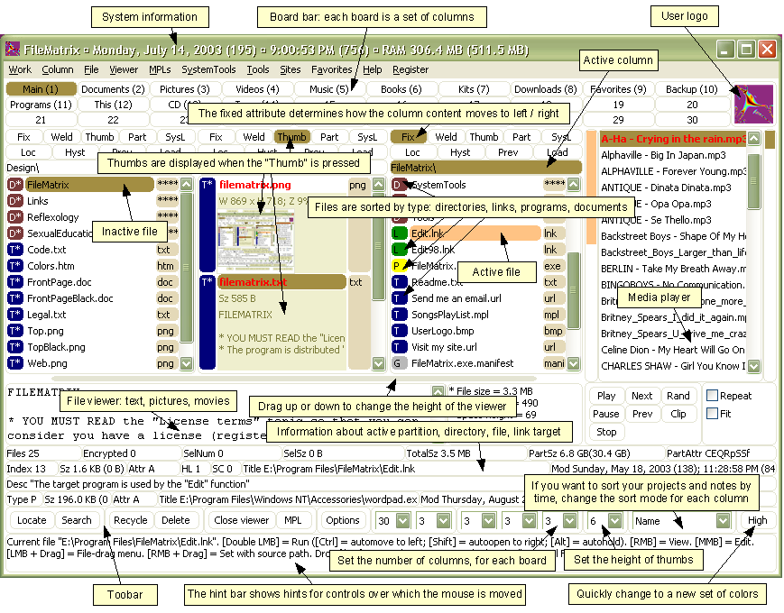
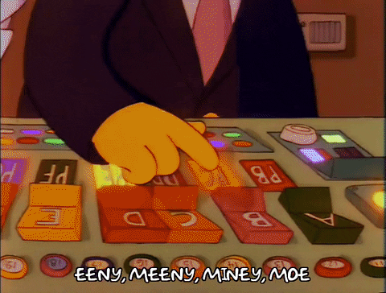
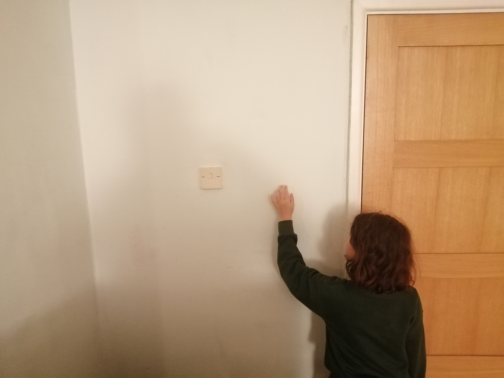

Why should we care about the design process?
"A brilliant solution to the wrong problem can be worse than no solution at all: solve the correct problem.”Donald A. Norman
"The problem with the designs of most engineers is that they are too logical. We have to accept human behavior the way it is, not the way we would wish it to be."
"Good design is actually a lot harder to notice than poor design, in part because good designs fit our needs so well that the design is invisible"
"The fact that the people who built the site didn't care enough to make things obvious - and easy - can erode our confidence in the site and the organization behind it"
- Steve Krug
What does good design mean?
probably not (just) buttons!
Human centred design
Place the user at the heart of design.
Can often be used in conjunction with the 5 whys.
ultimately meet the user's needs
Building great user experiences
1. Discoverability
What actions are possible?
Where and how to perform them
2. Understandability
What does it all mean?
How is the product supposed to be used?
What do all the different controls and settings mean?
Donald A. Norman suggests there are 6 concepts
1. Affordances
The perceived possible actions a person can perform
erm is this still a chair - can I sit on it?
these are chairs but can I sit on them?
2. Signifiers
Help the user understand what affordances there are and how to use them: e.g. labels

3. Constraints
Limitations in use which help to form conceptual models
Yikes! How do I flush this?
4. Mappings
Relationships between two sets of things, between a control and its results - these should be close together

5. Feedback
Results of an action, timely, consider quantity, tone etc
6. Conceptual models
How the user's mind understands how a product works. Re-used when interacting with new things
Some practical applications

- Affordances - primary button good.
- Signifiers - we talk about "selected output column" - but where is it "selected"? "Search datasets" - to find what?. Icons with no label - will they be understood?
- Constraints - Maybe the dataset list could be removed. Further settings hidden by toggles, could this be expanded?
- Mappings - hierarchy alignment & padding is confusing
- Feedback - Errors are getting better but have previously been cryptic
- Conceptual models - putting in dataset from left is not well known. Am I writing SQL here or IQL. What are the types of query?
- Understanability - null points
- Affordances - EVERTHING Shouty Shout shout. Some boxes clickable, some aren't
- Signifiers - Actually well labelled
- Constraints - Far too many options. Yet, help deemed most important but half hidden by pagination
- Mappings - hierarchy alignment & padding is confusing
- Feedback - n/a
- Conceptual models - debatable if the pagination dots are well known. Doesn't conform to the notion of a dashboard